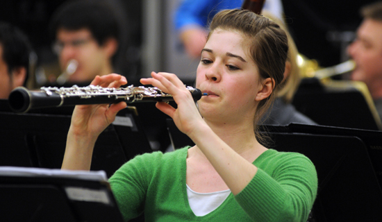

WOODWIND

The Woodwinds Area seeks to develop students' maximum musical and technical proficiency on their instruments, providing the foundation for their professional success in both performing and teaching.
The comprehensive program works successfully with a variety of students, from the performance major focused on a professional orchestral career to the music education major planning to teach high school students.
In addition to weekly private lessons, students have varied small and large ensemble opportunities in the school's three orchestras, wind ensemble and symphonic band, flute choir, and other small woodwind ensembles.
Students are encouraged to compete in festivals and competitions; in 2012 the school's Clarinet Quartet was selected to play at the International Clarinet Association’s annual conference and the Flute Choir was invited to perform at The National Flute Association convention.
Solo performance opportunities await interested students, including an annual concerto competition, with winners performing with the school's top orchestra, the Utah Philharmonia.
A thriving DMA program creatures a rich multi-level learning environment for all students.
Our woodwind faculty are active professional performers, involved in Salt Lake City’s thriving music scene, including the Utah Symphony and Ballet West's Utah Chamber Orchestra.